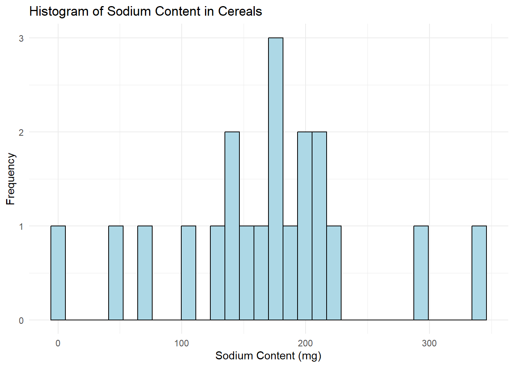
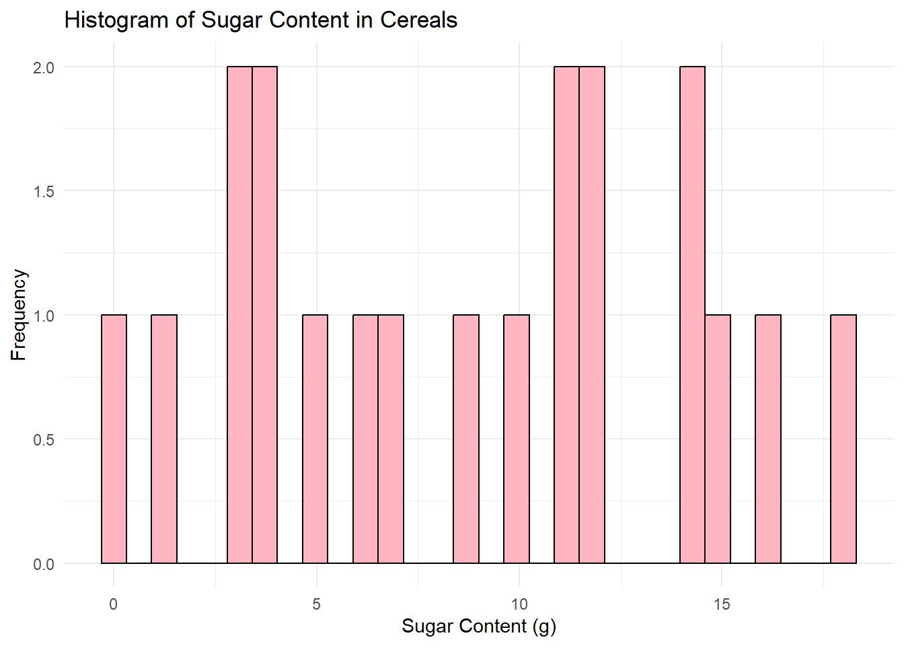
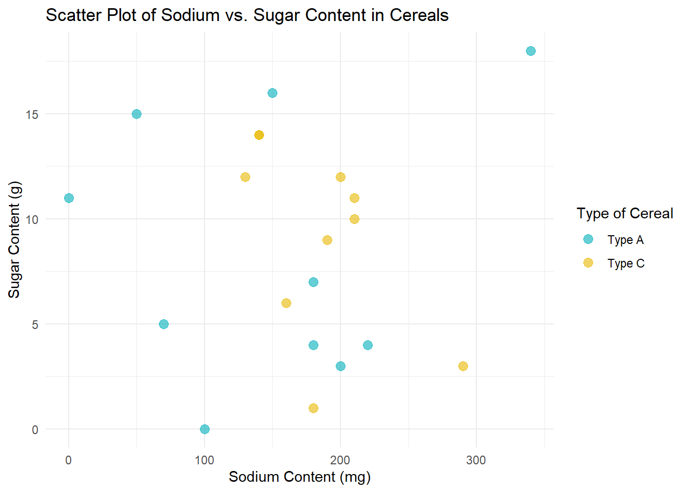

library(tidyverse)
library(ggplot2)
knitr::opts_chunk$set(echo = TRUE, warning=FALSE, message=FALSE)Challenge 5 Submission
challenge_5
cereal
Introduction to Visualization
Challenge Overview
Today’s challenge is to:
- read in a data set, and describe the data set using both words and any supporting information (e.g., tables, etc)
- tidy data (as needed, including sanity checks)
- mutate variables as needed (including sanity checks)
- create at least two univariate visualizations
- try to make them “publication” ready
- Explain why you choose the specific graph type
- Create at least one bivariate visualization
- try to make them “publication” ready
- Explain why you choose the specific graph type
R Graph Gallery is a good starting point for thinking about what information is conveyed in standard graph types, and includes example R code.
(be sure to only include the category tags for the data you use!)
Read in data
Read in one (or more) of the following datasets, using the correct R package and command.
- cereal.csv ⭐
- Total_cost_for_top_15_pathogens_2018.xlsx ⭐
- Australian Marriage ⭐⭐
- AB_NYC_2019.csv ⭐⭐⭐
- StateCounty2012.xls ⭐⭐⭐
- Public School Characteristics ⭐⭐⭐⭐
- USA Households ⭐⭐⭐⭐⭐
we choose cereal.csv ⭐ for this challengs
data <- read_csv("_data/cereal.csv")
dataBriefly describe the data
So, we’ve got this table filled with information about different cereals. What we’ve got in this table are four columns, each one representing something different about the cereals:
Cereal: This column’s pretty straightforward. It’s just the names of a bunch of different kinds of cereals, like “Frosted Mini Wheats”, “Raisin Bran”, “All Bran”, and more.
Sodium: This column’s showing us how much sodium, or salt, is in each of these cereals. It doesn’t tell us what the serving size is, though, which is kind of a bummer. The numbers here go from 0 (like in “Frosted Mini Wheats”) all the way up to a whopping 340 (like in “Raisin Bran”).
Sugar: Just like the Sodium column, this one’s telling us how much sugar is in each cereal. Again, we don’t know the serving size, but we can still see that some cereals have a lot of sugar (like “Raisin Bran” with 18 grams) and some have none at all (like “Fiber One”).
Type: Here’s where it gets a little mysterious. Each cereal is marked with either an “A” or a “C”, but we’re not exactly sure what that means. Maybe it’s something like “A” for “Awesome” and “C” for “Cool”? Just kidding! It probably refers to some sort of classification system for the cereals, but without more information, we can’t be sure what it’s all about.
So, in short, this table is showing us the names of a bunch of cereals and telling us how much sodium and sugar they each have. Plus, it’s sorting them into two mysterious categories, “A” and “C”. If we knew what the serving size was and what “A” and “C” meant, we could do some really neat analysis with this data! But even without that, it’s still a cool look at the differences between our favorite breakfast foods.
Tidy Data (as needed)
Is your data already tidy, or is there work to be done? Be sure to anticipate your end result to provide a sanity check, and document your work here.
Sure thing, let’s take a look at this in a way that’s a bit more laid-back!
Our cereal table seems pretty clean and tidy already. Remember, when we talk about data being “tidy”, we mean it fits into this easy-to-use structure:
- Each different type of info (like cereal name, sodium, sugar, and type) gets its own column.
- Each individual thing we’re looking at (in this case, each cereal) gets its own row.
- If we’re looking at different kinds of things (like cereals, and say, toaster pastries), they’d each get their own table.
Our cereal data is already like this. We’ve got our columns for each bit of info (Cereal, Sodium, Sugar, and Type), and each row is about a specific cereal. So, it’s all neat and tidy!
Are there any variables that require mutation to be usable in your analysis stream? For example, do you need to calculate new values in order to graph them? Can string values be represented numerically? Do you need to turn any variables into factors and reorder for ease of graphics and visualization?
Document your work here.
- Calculate New Values: Add a new column Sodium_Sugar_Ratio which is the ratio of the Sodium column to the Sugar column.
data <- data %>%
mutate(Sodium_Sugar_Ratio = Sodium / Sugar)- Represent Strings Numerically: Convert the ‘Type’ column to numeric values. Let’s assume we use 1 to represent ‘A’ and 2 to represent ‘C’.Now, We can see the new data set.
data$Type[data$Type == 'A'] <- 1
data$Type[data$Type == 'C'] <- 2
data$Type <- as.numeric(data$Type)
dataUnivariate Visualizations
# Histogram for Sodium
ggplot(data, aes(x=Sodium)) +
geom_histogram(color="black", fill="lightblue", bins=30) +
labs(title="Histogram of Sodium Content in Cereals", x="Sodium Content (mg)", y="Frequency") +
theme_minimal()
# Histogram for Sugar
ggplot(data, aes(x=Sugar)) +
geom_histogram(color="black", fill="lightpink", bins=30) +
labs(title="Histogram of Sugar Content in Cereals", x="Sugar Content (g)", y="Frequency") +
theme_minimal()
I chose to create histograms because they are a great tool for visualizing the distribution of a variable in your dataset. Histograms allow us to see where most of the data points fall (which would be the tallest bars in the histogram), and if the data is skewed in any particular direction. Also, we can identify any outliers or unusual data points.
In both graphs, I set the bin size to 30 for better granularity, and I used different colors for the bars for aesthetic purposes. I also added appropriate titles and labels to the x and y-axes to make the graphs “publication-ready”.
Bivariate Visualization(s)
Scatter plot for Sodium vs. Sugar
# Convert Type to a factor
data$Type <- as.factor(data$Type)
# Now create the scatter plot
ggplot(data, aes(x=Sodium, y=Sugar, color=Type)) +
geom_point(alpha=0.6, size=3) +
labs(title="Scatter Plot of Sodium vs. Sugar Content in Cereals", x="Sodium Content (mg)", y="Sugar Content (g)") +
theme_minimal() +
scale_color_manual(values=c("#00AFBB", "#E7B800"), name="Type of Cereal",
labels=c("Type A", "Type C"))
In this scatter plot, each point represents a cereal, with its Sodium content plotted on the x-axis and its Sugar content on the y-axis. I’ve also added color coding based on the Type of cereal, with Type A cereals in one color and Type C cereals in another. This helps us see if there’s a noticeable difference between the two Types of cereals in terms of their Sodium and Sugar content.
I chose a scatter plot because it’s a great way to visualize the relationship between two numeric variables. It allows us to see if there’s a correlation between Sodium and Sugar content, and if so, whether it’s positive or negative.